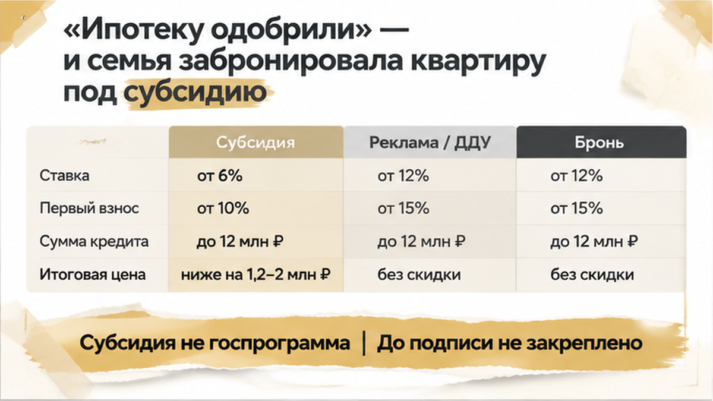
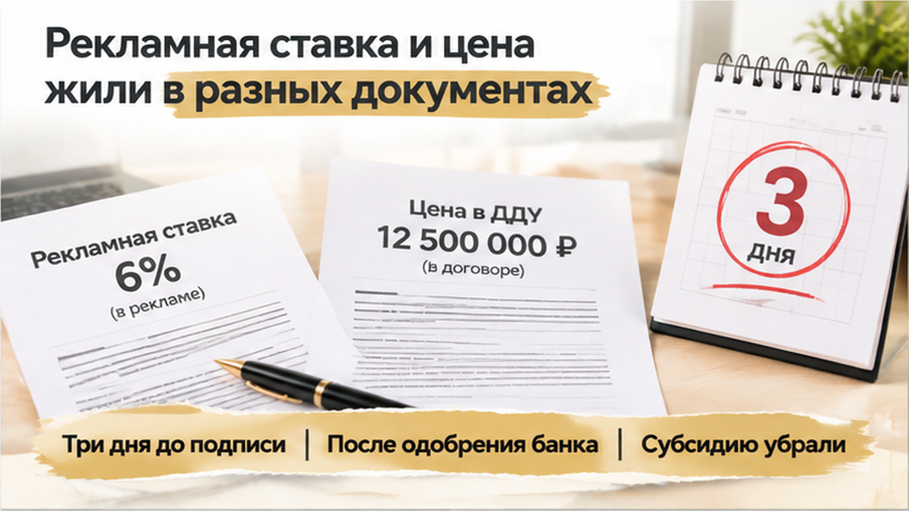
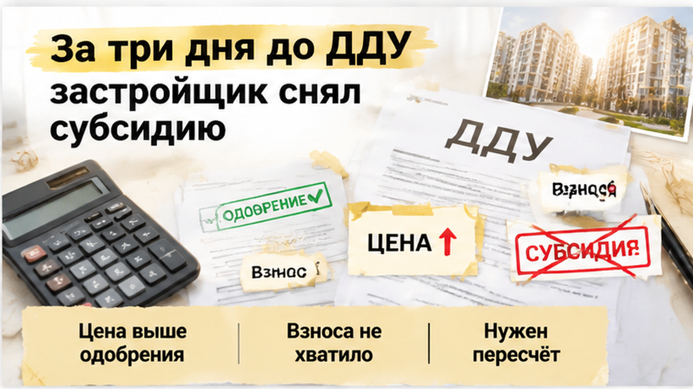
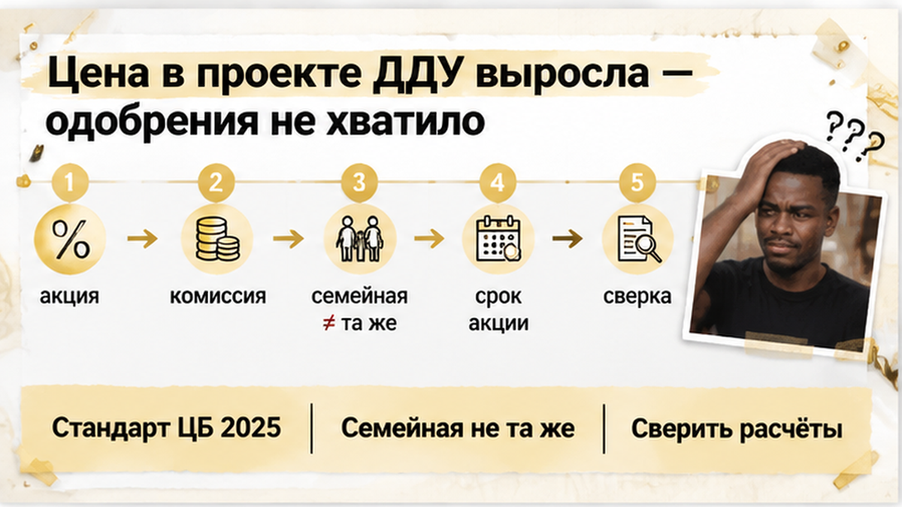
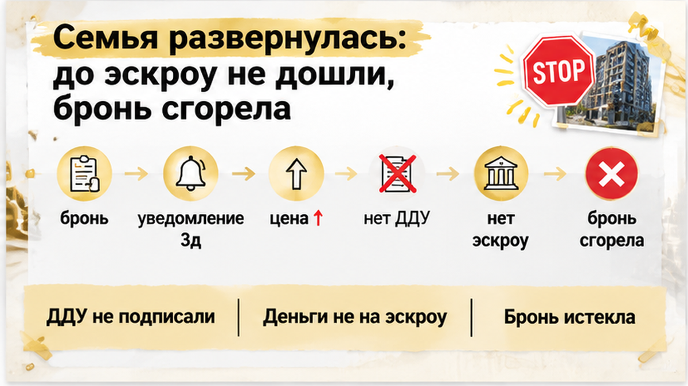
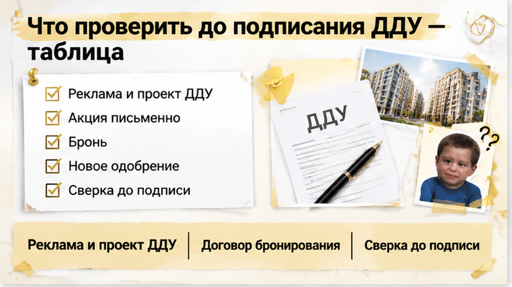

В Тюмени семья готовилась подписывать ДДУ на новостройку: ипотеку предварительно одобрили, квартиру забронировали, первоначальный взнос был готов. До сделки оставалось три дня, когда застройщик сообщил: субсидии, под которую считали ежемесячный платёж, больше нет. Рекламная ставка исчезла из нового расчёта, а цена в проекте договора оказалась выше той, под которую банк принимал решение. На кухне снова открыли калькулятор — теперь уже не для будущего ремонта, а чтобы понять, хватает ли семье денег на саму покупку.
Я Святослав Шакин, The Риэлтор, Тюмень. Рассказываю изнутри, как проверять новостройку до подписи и почему красивый платёж не всегда означает готовую сделку. Такие разборы выходят в Telegram и MAX.
Началось всё с предложения от застройщика. Семья с детьми выбирала квартиру не только по площади и планировке — смотрели прежде всего на ежемесячный платёж. В первые годы ставка должна была быть сниженной, поэтому покупка вписывалась в обычный семейный бюджет: ипотека, расходы на детей, текущая жизнь.
Банк выдал предварительное одобрение под конкретные параметры: цену квартиры, размер первоначального взноса, программу и рассчитанный платёж. После этого семья внесла деньги за бронь. Квартиру хотелось удержать, пока готовятся документы, поэтому назначили дату подписания ДДУ и открытия эскроу — счёта, на котором хранятся деньги покупателя до выполнения условий сделки.
Выглядело так, будто остались формальности. Квартира выбрана, банк предварительно согласен, бронь оплачена. Но предварительное одобрение — это не обещание банка профинансировать любую цену, которая появится в новом проекте договора. И не гарантия того, что застройщик сохранит рекламную субсидию до даты сделки.
В разборе почему после одобрения ипотеки сделка может не дойти до эскроу важна именно эта граница. Положительный ответ банка — ещё один шаг к покупке, а не финальная печать на всех её условиях. Банк согласовал определённое сочетание цены, взноса, программы и платежа. Если меняется хотя бы один элемент, старое одобрение уже нельзя воспринимать как универсальный пропуск.
Субсидия застройщика — это не государственная программа. Обычно речь идёт о коммерческом кредите банка-партнёра: девелопер компенсирует банку снижение ставки, нередко через комиссию, которая учитывается в стоимости квартиры. Поэтому маленький процент в рекламном объявлении нельзя рассматривать отдельно от полной цены жилья, размера кредита и срока действия сниженной ставки.
В этой истории привлекательный платёж был в рекламном расчёте, а цена, по которой семья должна была покупать квартиру, — в проекте ДДУ. Между ними находились условия акции, предварительное решение банка и договор бронирования. Это не один документ с одинаковой силой.
Реклама показывает предложение. Банк оценивает кредитоспособность покупателя при конкретных параметрах. Бронь удерживает выбранную квартиру на оговорённый срок. Но сама оплата брони не фиксирует автоматически ни ставку, ни субсидию, ни окончательную цену в ДДУ. Если такие условия важны для сделки, их нужно искать в письменных документах, а не оставлять на уровне слов менеджера.
Я всегда отдельно развожу три вещи, которые в разговоре легко смешиваются. Субсидия девелопера снижает банковскую ставку за счёт участия застройщика. Скидка на квартиру уменьшает цену самого объекта. Траншевая ипотека означает, что кредит выдают частями и проценты начисляют на уже выданную сумму. Это разные механизмы, а не три названия одной выгоды.
Семейная, IT- и военная ипотека тоже не становятся коммерческой субсидией только потому, что рядом в рекламе стоят небольшие проценты. У каждой программы свои условия и источник льготы. А срок действия низкой ставки после оформления кредита — это не то же самое, что срок сохранения предложения застройщика до подписания ДДУ.
До уведомления эти различия оставались за кадром. Семья видела подходящий платёж, выбранную квартиру и предварительное согласие банка. Но покупка ещё не была закреплена договором участия в долевом строительстве. До назначенной даты оставалось несколько дней — и именно в этот момент выяснилось, что рекламный расчёт и будущая цена сделки могут разойтись.


До подписания оставалось три дня, когда застройщик прислал уведомление об изменении условий. Субсидии, под которую семья выбирала квартиру и считала ежемесячный платёж, в прежнем виде больше не было.
Это произошло уже после предварительного одобрения банка и оплаты брони. Дата сделки стояла в календаре, документы готовились, но расчёт, с которым семья шла к подписанию, перестал работать.
Здесь важно не перепутать, кто именно изменил условия. Банк не сообщал, что сам поднял семье рыночную ставку. Застройщик убрал своё участие в снижении ставки и пересчитал коммерческое предложение.
В истории, где банк поднял ставку перед ДДУ, причина остановки была другой. Для покупателя обе ситуации выглядят одинаково неприятно — квартира становится менее доступной. Но выяснять причину и запрашивать документы нужно у того, кто изменил расчёт.
Фраза «субсидию сняли» сама по себе ещё не отвечает на главный вопрос: сколько теперь придётся платить. Нужно увидеть, что произошло с ценой квартиры, первоначальным взносом, суммой кредита и платежами после окончания временного снижения ставки.
Письменное уведомление застройщика и обновлённый расчёт банка отвечают на разные вопросы. Первое показывает, что продавец больше не предлагает. Второе — можно ли вообще купить квартиру на оставшихся условиях.
Сентябрьские новости добавляли спешки, но не заменяли условия конкретной сделки. E1.ru и NGS55.ru со ссылкой на пресс-службу сообщили, что крупнейший банк с 1 октября прекращает короткие субсидированные программы, а оформление по старым условиям возможно до 29 сентября включительно.
Это сообщение СМИ, а не тарифная страница банка и не обещание сохранить предложение для любой новостройки Тюмени. Я бы не считал общую дату основанием подписывать договор без нового расчёта.

Следующая проблема обнаружилась в проекте ДДУ: цена квартиры стала выше той, под которую банк предварительно одобрил кредит.
Сотни тысяч рублей — модельный диапазон прибавки в этом разборе, а не средний рост цен по Тюмени. Одобренной суммы вместе с первоначальным взносом семье уже не хватало. Поэтому дело упёрлось не только в будущий ежемесячный платёж: собрать указанную в договоре сумму на прежних условиях было невозможно.
Предварительное одобрение не означает, что банк добавит недостающие деньги вслед за продавцом. Оно относится к определённым цене, взносу, программе и платежу. Если меняется цена, меняется и вся конструкция кредита.
В этой ситуации банк не перенёс старое решение на новую стоимость без повторной заявки и пересчёта. Покупателям предстояло заново выяснять, какую сумму им готовы выдать и какой платёж получится, а не просто заменить одну страницу в документах.

При этом рост цены нельзя автоматически объяснять законностью любой комиссии за низкую ставку. С 1 января 2025 года действует стандарт защиты ипотечных заёмщиков: банк не должен получать от застройщика вознаграждение за снижение ставки, если это увеличивает стоимость жилья.
Однако одно изменение проекта ДДУ ещё не доказывает нарушение этого правила. Для такого вывода нужны условия программы и документы о том, за что именно платит покупатель.
Я бы в такой точке сопоставлял не два рекламных процента, а прежний расчёт с новой ценой в договоре. Пока банк проверяет заявку заново, назначенная дата подписания остаётся только датой, а не подтверждением доступности покупки.
Желание удержать выбранную квартиру понятно, особенно после нескольких недель ожидания. Но подпись покупателя не восполняет нехватку денег и не обязывает банк выдать больше.
Семья не подписала ДДУ — договор участия в долевом строительстве. Срок брони истёк, прежнюю субсидию застройщик не восстановил, до открытия эскроу дело не дошло. Квартиру на первоначальных условиях купить не получилось. Но деньги, предназначенные для покупки, не ушли на счёт сделки, которую семейный бюджет уже не вытягивал.
Плата за бронь оказалась отдельной потерей, а не частью защищённых на эскроу средств. При этом из такого финала нельзя вывести правило, что любую бронь обязательно удержат или, наоборот, вернут после отмены акции. Условия возврата нужно смотреть в договоре бронирования. Само снятие субсидии не даёт универсального права получить деньги обратно, а обещать возврат без изучения документа было бы нечестно.
Здесь важно различать отказ от подписания и расторжение уже заключённого договора. По 214-ФЗ ДДУ считается заключённым с момента государственной регистрации; в этой истории семья остановилась раньше. Сам факт изменения цены до регистрации ещё не позволяет объявить действия застройщика незаконными: нужно разбирать, что именно стороны успели закрепить письменно.
Возможность остановиться до ДДУ и эскроу важна именно тогда, когда новые документы уже не совпадают с прежними договорённостями. Неприятно потерять бронь. Но ещё неприятнее подписать договор, в котором цена уже выше семейного бюджета, а затем пытаться догнать собственные обязательства.
Одобрение ипотеки уже на руках, но застройщик снял субсидию за три дня до ДДУ. Вы бы подписали договор, чтобы не потерять квартиру, или остановили сделку и начали искать заново?

Я бы начал не с просьбы менеджеру вернуть красивый платёж, а со сверки документов. Рекламный расчёт, бронь, банковское одобрение и проект ДДУ должны описывать одну покупку, а не четыре разных предложения.
Если цена изменилась, старое одобрение нельзя использовать как доказательство, что денег по-прежнему хватает. Нужен новый расчёт банка под ту сумму, которая стоит в проекте договора.
| Что сопоставить | Какой разрыв искать | Что получить до подписи |
|---|---|---|
| Рекламный расчёт и проект ДДУ | Разная цена квартиры, другой взнос или срок сниженной ставки | Расчёт по фактической цене и платежам после окончания субсидии |
| Условия акции и уведомление застройщика | Истекла акция, изменились условия участия или сама субсидия | Письменное объяснение, что отменено и какое предложение действует теперь |
| Бронь и обещания менеджера | Квартиру придержали, но цену и акцию не закрепили | Условия окончания брони и возврата платы из договора |
| Одобрение банка и новая цена | Не хватает кредита вместе с первоначальным взносом | Обновлённое решение банка, если оно требуется, и новый ипотечный расчёт |

Чтобы не потерять этот разбор перед встречей в офисе продаж, оставайтесь со мной в Telegram или MAX. Разбираем документы на новостройки Тюмени простым языком.
Святослав Шакин, The Риэлтор, Тюмень — для меня работа с такой покупкой начинается до аванса. Сверить рекламный расчёт с проектом ДДУ, проверить письменные условия цены и субсидии, дождаться расчёта банка — значит оставить решение за покупателем.
Новостройку можно покупать, не соглашаясь на непосильный кредит ради уже оплаченной брони. Остановиться до эскроу неприятно, но это сохраняет деньги для следующего решения. В этой истории семья остановилась до ДДУ: бронь сгорела, в новую цену они не вошли, зато сделка, которую семейный бюджет не тянул, не стала их обязательством.